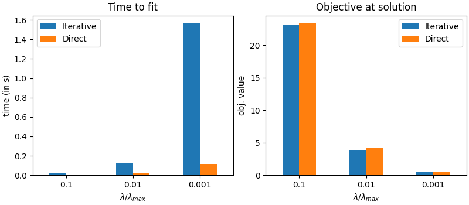

Note
Click here to download the full example code
Timing comparison between direct prox computation and reweighting¶
Compare time and objective value of L0_5-regularized problem with direct proximal computation and iterative reweighting.
# Author: Pierre-Antoine Bannier <pierreantoine.bannier@gmail.com>
import time
import numpy as np
import pandas as pd
from numpy.linalg import norm
import matplotlib.pyplot as plt
from skglm.penalties.separable import L0_5
from skglm.utils import make_correlated_data
from skglm.estimators import GeneralizedLinearEstimator
from skglm.experimental import IterativeReweightedL1
from skglm.solvers import AndersonCD
n_samples, n_features = 200, 500
X, y, w_true = make_correlated_data(
n_samples=n_samples, n_features=n_features, random_state=24)
alpha_max = norm(X.T @ y, ord=np.inf) / n_samples
alphas = [alpha_max / 10, alpha_max / 100, alpha_max / 1000]
tol = 1e-10
def _obj(w):
return (np.sum((y - X @ w) ** 2) / (2 * n_samples)
+ alpha * np.sum(np.sqrt(np.abs(w))))
def fit_l05(alpha):
start = time.time()
iterative_l05 = IterativeReweightedL1(
penalty=L0_5(alpha),
solver=AndersonCD(tol=tol, fit_intercept=False)).fit(X, y)
iterative_time = time.time() - start
# `subdiff` strategy for WS is uninformative for L0_5
start = time.time()
direct_l05 = GeneralizedLinearEstimator(
penalty=L0_5(alpha),
solver=AndersonCD(tol=tol, fit_intercept=False,
ws_strategy="fixpoint")).fit(X, y)
direct_time = time.time() - start
results = {
"iterative": (iterative_l05, iterative_time),
"direct": (direct_l05, direct_time),
}
return results
# caching Numba compilation
fit_l05(alpha_max/10)
time_results = np.zeros((2, len(alphas)))
obj_results = np.zeros((2, len(alphas)))
# actual run
for i, alpha in enumerate(alphas):
results = fit_l05(alpha=alpha)
iterative_l05, iterative_time = results["iterative"]
direct_l05, direct_time = results["direct"]
iterative_obj = _obj(iterative_l05.coef_)
direct_obj = _obj(direct_l05.coef_)
obj_results[:, i] = np.array([iterative_obj, direct_obj])
time_results[:, i] = np.array([iterative_time, direct_time])
time_df = pd.DataFrame(time_results.T, columns=["Iterative", "Direct"])
obj_df = pd.DataFrame(obj_results.T, columns=["Iterative", "Direct"])
time_df.index = [1e-1, 1e-2, 1e-3]
obj_df.index = [1e-1, 1e-2, 1e-3]
fig, axarr = plt.subplots(1, 2, figsize=(8, 3.5), constrained_layout=True)
ax = axarr[0]
time_df.plot.bar(rot=0, ax=ax)
ax.set_xlabel(r"$\lambda/\lambda_{max}$")
ax.set_ylabel("time (in s)")
ax.set_title("Time to fit")
ax = axarr[1]
obj_df.plot.bar(rot=0, ax=ax)
ax.set_xlabel(r"$\lambda/\lambda_{max}$")
ax.set_ylabel("obj. value")
ax.set_title("Objective at solution")
plt.show(block=False)
Total running time of the script: ( 0 minutes 4.515 seconds)